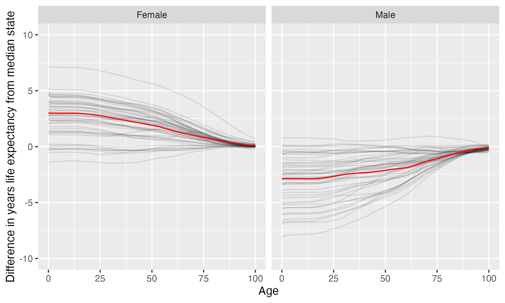

DePaul University
DePaul University is located in Chicago, Illinois. It is a private not-for-profit, 4-year or above institution.
From Wikipedia: DePaul University is a private Catholic research university in Chicago, Illinois. Founded by the Vincentians in 1898, the university takes its name from the 17th-century French priest Saint Vincent de Paul. In 1998, it became the largest Catholic university in terms of enrollment in North America. Following in the footsteps of its founders, DePaul places special emphasis on recruiting first-generation students and others from disadvantaged backgrounds.
Notes
These are items that bear looking into more closely.
- This institution’s full-time undergraduate enrollment has tended to decrease over time.
Overview of institution
Institution kind: Doctoral Universities: High Research Activity
Undergrad program: Professions plus arts & sciences, high graduate coexistence
Graduate program: Research Doctoral: Comprehensive programs, no medical/veterinary school
Enrollment profile: Majority undergraduate (see more details below)
Average net price for undergrads on financial aid: $31,872 (2.3 times the equivalent cost of Harvard).
Average net price for families with $30K-48K income: $27,252 (This is $25,856 more expensive than what Harvard costs for equivalent students).
Actual price for your family: Go here to see what your family may be asked to pay. It can be MUCH lower than the average price but also higher for some.
Size and setting: Four-year, large, primarily nonresidential
In state percentage: 61.8% of first year students come from Illinois
In US percentage: 98.5% of first year students come from the US (note that 0.9% have no residence reported)
Graduation rate (within 6 years) for students seeking a Bachelors: 69.6% (this is what is usually reported as “graduation rate”)
Graduation rate (within 4 years) for students seeking a Bachelors: 57.6%
Percent of students seeking a Bachelors who transfer out of this institution: 18%
Student to tenure-stream faculty ratio: 19.4 (undergrads to tenure-stream faculty) [Tenure explained]
Student to faculty ratio: 14.6 (undergrads to all faculty)
Degrees offered: Certificate of less than 1 year, Certificate of at least 12 weeks but less than 1 year, Certificate of at least 1 year but less than 2 years, Bachelor’s degree, Postbaccalaureate certificate, Master’s degree, Post master’s certificate, Doctor’s degree: research scholarship, Doctor’s degree: professional practice
Schedule: Quarter
Institution provides on campus housing: Yes
Dorm capacity: There are enough dorm beds for 2719 students
Freshmen required to live on campus: No
Meal plan: Yes, number of meals per week can vary
Covid vaccination requirement for students: At some point during the pandemic (this may have changed), this institution required students to be vaccinated against covid (based on info from here)
Covid vaccination requirement for faculty/staff: At some point during the pandemic (this may have changed), this institution required faculty and/or staff to be vaccinated against covid (based on info from here)
Advanced placement (AP) credits used: Yes
Disabilities: 7 percent of undergrads are registered as having disabilities.
Overview of location
- Abortion in this state: Protective (based on https://states.guttmacher.org/policies/ as of May 10, 2023)
- Gun law stringency: A- (higher grade = more stringent)
- State rep support for contraception: 77.8% of US reps from this state voted in favor of legal protections for contraception.
- State rep support for recognizing same-sex and interracial marriage: 83.3% of US reps from this state voted in favor of requiring states to recognize same-sex and interracial marriages performed in other states
- Anti-trans legislative risk: Safest (based on Erin Reed’s work, as of May 19, 2023)
- Ecological region: Central forest-grasslands transition
- Biome: Temperate Grasslands, Savannas & Shrublands
- Distance to mountains: 405.4 miles to Appalachian Mountains
- Climate: See overview at WeatherSpark
Similar institutions
This is using information about school size, acceptance rate, yield rate, graduation rate, cost, athletic conference, and similar metrics, but it can miss important axes of similarity (for example, culinary versus hair styling schools).
Map
Enrollment
| DePaul University | Change over ≤ 11 years | Trend | Big East Conference | Doctoral Universities: High Research Activity | |
|---|---|---|---|---|---|
| Undergrads (full time) | 12,950 (2021) |

|
↓ -78 per year |
||
| Undergrads (part time) | 1,344 (2021) |

|
↓ -165 per year |
||
| Grad students (full time) | 5,173 (2021) |

|
|||
| Grad students (part time) | 2,203 (2021) |

|
↓ -110 per year |
||
| Admission rate (undergrads) | 69% (2021) |

|
|||
| Yield rate (percent of applicants offered undergraduate admission who accept) | 13% (2021) |

|
✪✪ Better (higher) than 22% |
✪ Better (higher) than 12% |
|
| Graduation rate (bachelors in 6 years) | 70% (2021) |

|
✪ Better (higher) than 17% |
✪✪✪✪ Better (higher) than 67% |
|
| Transfer out rate (bachelors) | 18% (2021) |

|
✪ Better (lower) than 18% |
✪✪✪✪ Better (lower) than 71% |
Student financing
At many universities, almost no students pay the listed tuition and fees (“sticker price”): instead, their financial aid package lowers this dramatically, but how much students pay can vary substantially based on family income and other factors. The tuition below is the average across many students receiving aid: your family may be asked to pay less or more than this.
| DePaul University | Change over ≤ 11 years | Trend | Big East Conference | Doctoral Universities: High Research Activity | |
|---|---|---|---|---|---|
| Average net price (for students awarded aid) | $31,872 (2020) |

|
↑ $483 per year |
✪✪ Better (lower) than 39% |
✪ Better (lower) than 13% |
| Undergrads getting federal aid | 31% (2021) |

|
✪✪✪ Better (higher) than 50% |
✪✪ Better (higher) than 25% |
|
| Undergrads getting any aid | 99% (2021) |

|
✪✪✪✪ Better (higher) than 72% |
✪✪✪✪✪ Better (higher) than 87% |
|
| Undergrads getting Pell grants | 31% (2021) |

|
✪✪✪✪✪ Better (higher) than 89% |
✪✪✪ Better (higher) than 43% |
Teaching
| DePaul University | Change over ≤ 11 years | Trend | Big East Conference | Doctoral Universities: High Research Activity | |
|---|---|---|---|---|---|
| Undergrads per tenure track instructor (lower is better) | 19 (2020) |

|
↑ 0.3 per year |
✪✪ Better (lower) than 33% |
✪✪✪ Better (lower) than 56% |
| Undergrads per instructor (lower is better) | 15 (2020) |

|
✪ Better (lower) than 6% |
✪✪✪ Better (lower) than 47% |
|
| Total instructors | 874 (2020) |

|
↓ -13 per year |
||
| Tenure track instructors | 657 (2020) |

|
↓ -18 per year |
||
| Non-tenure track instructors | 217 (2020) |

|
↑ 5.3 per year |
Student details
| DePaul University | Change over ≤ 11 years | |
|---|---|---|
| Dorm capacity | 2,719 (2021) |

|
| Percent of undergrads with registered disabilities (≤3 is rounded up to 3) | 7% (2021) |

|
Institution finances
| DePaul University | Change over ≤ 11 years | Trend | Big East Conference | Doctoral Universities: High Research Activity | |
|---|---|---|---|---|---|
| Revenue from tution and fees | 56% (2021) |

|
✪ Better (lower) than 6% |
✪ Better (lower) than 8% |
|
| Revenue minus expenses | $252 M (2021) |

|
✪✪✪ Better (higher) than 50% |
✪✪✪✪✪ Better (higher) than 88% |
|
| Revenue | $768 M (2021) |

|
|||
| Expenses | $517 M (2021) |

|
|||
| Assets | $2.0 B (2021) |

|
↑ $70 M per year |
✪✪ Better (higher) than 39% |
✪✪✪✪✪ Better (higher) than 84% |
Graduation rates
Graduation rates for bachelor’s degrees within 150% of normal time (6 years for a 4-year degree). Note that this uses US federal demographic data: it only has two genders and a specified set of ethnicities and races. For groups with small numbers, the graduation rate may be highly variable year to year (do all three people in this group graduate this year or just two of three, for example).
| DePaul University | Change over ≤ 11 years | Big East Conference | Doctoral Universities: High Research Activity | |
|---|---|---|---|---|
| Total | 70% (2021) |

|
✪ Better (higher) than 17% |
✪✪✪✪ Better (higher) than 67% |
| Men | 68% (2021) |

|
✪✪ Better (higher) than 22% |
✪✪✪✪ Better (higher) than 74% |
| Women | 71% (2021) |

|
✪ Better (higher) than 11% |
✪✪✪ Better (higher) than 59% |
| American Indian or Alaska Native men | 0% (2018) |

|
✪ Better (higher) than 20% |
✪✪ Better (higher) than 36% |
| American Indian or Alaska Native women | 0% (2017) |

|
✪ Better (higher) than 9% |
✪✪ Better (higher) than 23% |
| Asian men | 75% (2021) |

|
✪✪ Better (higher) than 22% |
✪✪✪✪ Better (higher) than 72% |
| Asian women | 78% (2021) |

|
✪✪ Better (higher) than 22% |
✪✪✪ Better (higher) than 54% |
| Black or African American men | 53% (2021) |

|
✪✪ Better (higher) than 28% |
✪✪✪✪ Better (higher) than 67% |
| Black or African American women | 56% (2021) |

|
✪ Better (higher) than 11% |
✪✪✪ Better (higher) than 52% |
| Hispanic men | 60% (2021) |

|
✪✪ Better (higher) than 22% |
✪✪✪✪ Better (higher) than 67% |
| Hispanic women | 61% (2021) |

|
✪ Better (higher) than 11% |
✪✪✪ Better (higher) than 56% |
| Native Hawaiian or other Pacific Islander men | 67% (2021) |

|
✪✪ Better (higher) than 30% |
✪✪✪✪ Better (higher) than 62% |
| Native Hawaiian or other Pacific Islander women | 0% (2021) |

|
✪ Better (higher) than 9% |
✪✪ Better (higher) than 23% |
| White men | 72% (2021) |

|
✪✪ Better (higher) than 28% |
✪✪✪✪ Better (higher) than 73% |
| White women | 76% (2021) |

|
✪ Better (higher) than 11% |
✪✪✪✪ Better (higher) than 66% |
| Two or more races men | 56% (2021) |

|
✪✪ Better (higher) than 33% |
✪✪✪✪ Better (higher) than 63% |
| Two or more races women | 56% (2021) |

|
✪ Better (higher) than 11% |
✪✪✪ Better (higher) than 43% |
| Nonresident alien men | 63% (2021) |

|
✪✪✪ Better (higher) than 44% |
✪✪✪ Better (higher) than 60% |
| Nonresident alien women | 72% (2021) |

|
✪✪ Better (higher) than 39% |
✪✪✪ Better (higher) than 58% |
Freshmen demographics
Demographic data for first time degree-seeking students. Note that this uses US federal demographic data: it only has two genders and a specified set of ethnicities and races.
| DePaul University | Change over ≤ 11 years | |
|---|---|---|
| Men (percent freshmen) | 41% (2021) |

|
| Women (percent freshmen) | 59% (2021) |

|
| American Indian or Alaska Native men (percent freshmen) | 0% (2021) |

|
| American Indian or Alaska Native women (percent freshmen) | 0% (2021) |

|
| Asian men (percent freshmen) | 4.7% (2021) |

|
| Asian women (percent freshmen) | 6.2% (2021) |

|
| Black or African American men (percent freshmen) | 2.6% (2021) |

|
| Black or African American women (percent freshmen) | 4.6% (2021) |

|
| Hispanic men (percent freshmen) | 10% (2021) |

|
| Hispanic women (percent freshmen) | 14% (2021) |

|
| Native Hawaiian or Other Pacific Islander men (percent freshmen) | 0% (2021) |

|
| Native Hawaiian or Other Pacific Islander women (percent freshmen) | 0.0% (2021) |

|
| White men (percent freshmen) | 19% (2021) |

|
| White women (percent freshmen) | 29% (2021) |

|
| Two or more races men (percent freshmen) | 1.9% (2021) |

|
| Two or more races women (percent freshmen) | 2.3% (2021) |

|
| Race ethnicity unknown men (percent freshmen) | 0.6% (2021) |

|
| Race ethnicity unknown women (percent freshmen) | 0.7% (2021) |

|
| Nonresident alien men (percent freshmen) | 1.7% (2021) |

|
| Nonresident alien women (percent freshmen) | 1.5% (2021) |

|
Freshmen geography
| DePaul University | Change over ≤ 11 years | |
|---|---|---|
| In state | 62% (2021) |

|
| US | 98% (2021) |

|
| Not reported | 0.9% (2021) |

|
Tenure track faculty
Tenure track faculty are those who are eligible for tenure. This includes both pre-tenure and tenured faculty. Once faculty get tenure, they are (generally) protected from being fired for intellectual reasons, helping to ensure their freedom in teaching and research. They can still lose their positions for misconduct, financial problems, not fulfilling their duties, or other reasons. Note that this chart uses US federal demographic data: it only has two genders and a specified set of ethnicities and races.
| DePaul University | Change over ≤ 11 years | Trend | |
|---|---|---|---|
| Total (tenure-track count) | 657 (2020) |

|
↓ -18 per year |
| Women (tenure-track count) | 301 (2020) |

|
↓ -6.1 per year |
| Men (tenure-track count) | 356 (2020) |

|
↓ -12 per year |
| American Indian or Alaska Native (tenure-track count) | 2 (2020) |

|
|
| Asian (tenure-track count) | 42 (2020) |

|
↓ -0.5 per year |
| Black or African American (tenure-track count) | 45 (2020) |

|
↓ -1.4 per year |
| Hispanic or Latino (tenure-track count) | 40 (2020) |

|
↓ -0.9 per year |
| Native Hawaiian or other Pacific Islander (tenure-track count) | 0 (2020) |

|
|
| White (tenure-track count) | 372 (2020) |

|
↓ -18 per year |
| Two or more races (tenure-track count) | 7 (2020) |

|
↑ 0.1 per year |
| Nonresident alien (tenure-track count) | 70 (2020) |

|
↑ 1.5 per year |
Non-tenure track faculty
Non-tenure track faculty are not eligible for tenure. Some are hired one semester at a time, some have multi-year contracts. They typically have a higher teaching load than tenure track faculty, leaving less time for research or other creative endeavors. They are also easier to fire than tenured faculty. Sometimes they are external experts (a noted musician, a former senator) who are hired to teach some classes without the expected permanence of a tenure-track position. Note that this chart uses US federal demographic data: it only has two genders and a specified set of ethnicities and races.
| DePaul University | Change over ≤ 11 years | Trend | |
|---|---|---|---|
| Total (non-tenure-track count) | 217 (2020) |

|
↑ 5.3 per year |
| Women (non-tenure-track count) | 108 (2020) |

|
↑ 3.2 per year |
| Men (non-tenure-track count) | 109 (2020) |

|
↑ 2.2 per year |
| American Indian or Alaska Native (non-tenure-track count) | 1 (2020) |

|
|
| Asian (non-tenure-track count) | 9 (2020) |

|
|
| Black or African American (non-tenure-track count) | 10 (2020) |

|
|
| Hispanic or Latino (non-tenure-track count) | 13 (2020) |

|
|
| Native Hawaiian or other Pacific Islander (non-tenure-track count) | 0 (2020) |

|
|
| White (non-tenure-track count) | 147 (2020) |

|
↑ 4.1 per year |
| Two or more races (non-tenure-track count) | 2 (2020) |

|
|
| Nonresident alien (non-tenure-track count) | 8 (2020) |

|
Library facilities
| DePaul University | Change over ≤ 11 years | Trend | Big East Conference | Doctoral Universities: High Research Activity | |
|---|---|---|---|---|---|
| Number of physical books | 547,711 (2021) |

|
↓ -53,326 per year |
✪✪✪ Better (higher) than 44% |
✪✪✪ Better (higher) than 50% |
| Physical library circulations per students and faculty | 1.0 (2020) |

|
↓ -0.8 per year |
✪ Better (higher) than 11% |
✪✪✪ Better (higher) than 50% |
| Digital library circulations per students and faculty | 65 (2020) |

|
✪✪✪✪ Better (higher) than 67% |
✪✪✪✪ Better (higher) than 79% |
Life expectancy
This hopefully will not be relevant for potential students, but it may be for people moving to an area longer term, such as faculty and staff choosing where to live. This uses information from US National Vital Statistics Reports for 2020; like much federal data, it assumes people are male or female. For age difference from median, it is from the median state, averaging across all genders (one consequence of this is that the difference from the median life expectancy is almost always negative for men).
- Life expectancy at birth: 79.8 years women (3 years over the median), 73.8 years men (2.9 years below the median)
- Remaining life expectancy at age 18: 62.4 years women (2.9 years over the median), 56.6 years men (2.8 years below the median)
- Remaining life expectancy at age 30: 50.8 years women (2.6 years over the median), 45.7 years men (2.5 years below the median)
- Remaining life expectancy at age 45: 36.6 years women (2.1 years over the median), 32.3 years men (2.2 years below the median)
- Remaining life expectancy at age 60: 23.4 years women (1.4 years over the median), 20.1 years men (1.9 years below the median)
We can also plot the extra / fewer years of life expected for this state (red) compared to other states (dark gray) at each age. Again, this is normalized for the median state.
